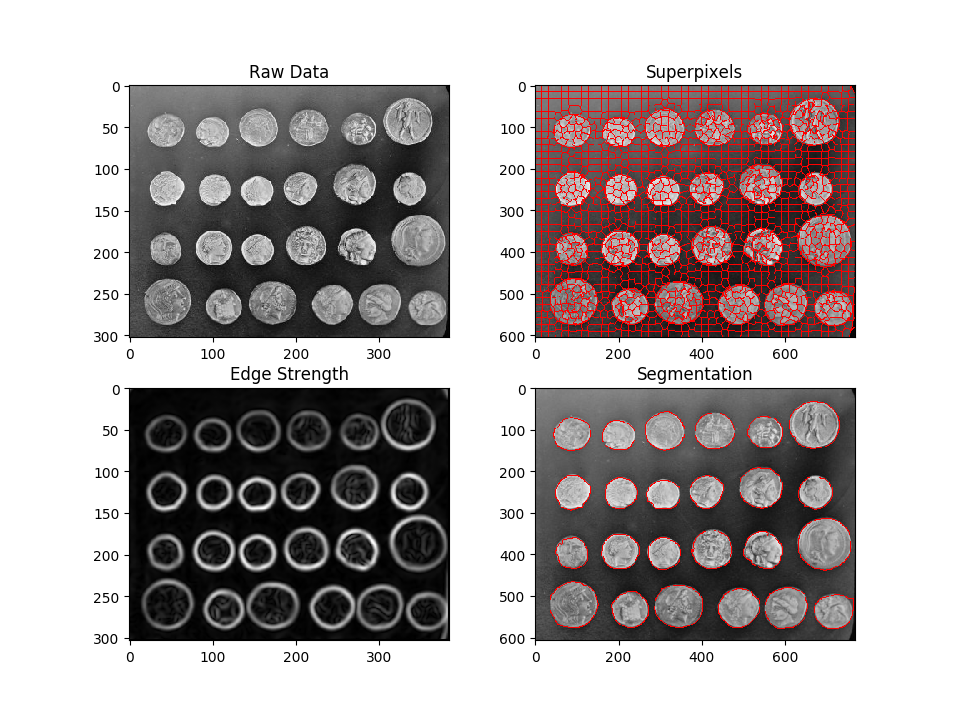

Agglomerative Clustering¶
Segment an image with agglomerative clustering. We start from a region adjacency graph
Out:
(303, 384) (303, 384)
from __future__ import print_function
# numpy
import numpy
# skimage
import skimage.filters # filters
import skimage.segmentation # Superpixels
import skimage.data # Data
import skimage.color # rgb2Gray
# pylab
import pylab # Plotting
# nifty
import nifty.graph.rag # RAG
import nifty.graph.agglo # Agglomerative clustering
# load some image
img = skimage.data.coins()
# slic superpixels
overseg = skimage.segmentation.slic(img, n_segments=2000,
compactness=0.1, sigma=1)
# make the Region adjacency graph (RAG)
rag = nifty.graph.rag.gridRag(overseg)
# compute edge strength
smoothed = skimage.filters.gaussian(img, 2.5)
edgeStrength = skimage.filters.sobel(smoothed)
# accumulate the mean edge value
# along the superpixel boundaries
# length of each boundary and
print(edgeStrength.shape, overseg.shape)
edge_features, node_features = nifty.graph.rag.accumulateMeanAndLength(
rag, edgeStrength, [512,512],0)
meanEdgeStrength = edge_features[:,0]
edgeSizes = edge_features[:,1]
nodeSizes = node_features[:,1]
# cluster-policy
clusterPolicy = nifty.graph.agglo.edgeWeightedClusterPolicy(
graph=rag, edgeIndicators=meanEdgeStrength,
edgeSizes=edgeSizes, nodeSizes=nodeSizes,
numberOfNodesStop=25, sizeRegularizer=0.2)
# run agglomerative clustering
agglomerativeClustering = nifty.graph.agglo.agglomerativeClustering(clusterPolicy)
agglomerativeClustering.run()
nodeSeg = agglomerativeClustering.result()
# convert graph segmentation
# to pixel segmentation
seg = nifty.graph.rag.projectScalarNodeDataToPixels(rag, nodeSeg)
# plot the results
# increase default figure size
a,b = pylab.rcParams['figure.figsize']
pylab.rcParams['figure.figsize'] = 1.5*a, 1.5*b
f = pylab.figure()
f.add_subplot(2, 2, 1)
pylab.imshow(img, cmap='gray')
pylab.title('Raw Data')
f.add_subplot(2, 2, 2)
b_img = skimage.segmentation.mark_boundaries(img,
overseg.astype('uint32'), mode='inner', color=(1,0,0))
pylab.imshow(b_img, cmap='gray')
pylab.title('Superpixels')
f.add_subplot(2, 2, 3)
pylab.imshow(edgeStrength, cmap='gray')
pylab.title('Edge Strength')
f.add_subplot(2, 2, 4)
b_img = skimage.segmentation.mark_boundaries(img,
seg.astype('uint32'), mode='inner', color=(1,0,0))
pylab.imshow(b_img)
pylab.title('Segmentation')
pylab.show()
Total running time of the script: ( 0 minutes 0.558 seconds)